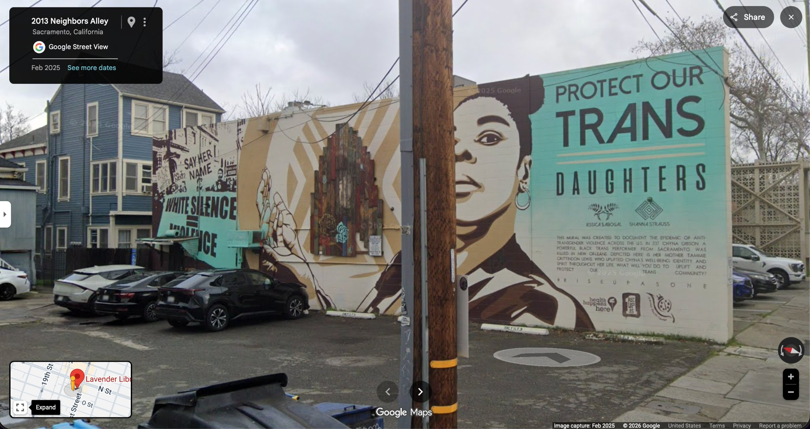
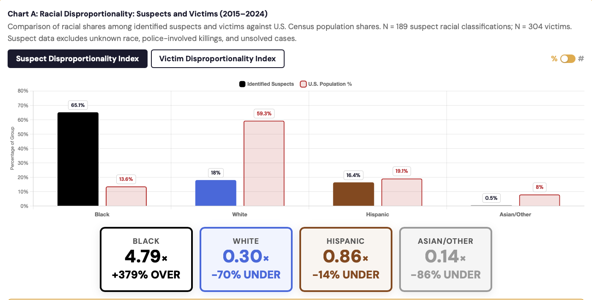
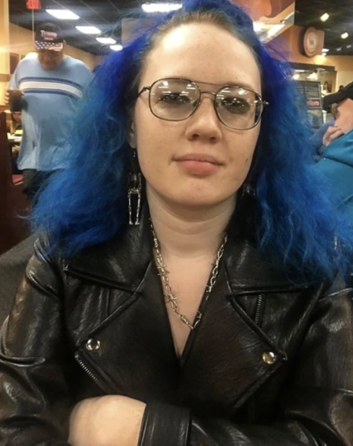

Published in full by ABC10 at the time of the declaration.

On a building at 2013 Neighbors Alley in Midtown Sacramento, a public mural memorializes Chyna Gibson, a Black transgender performer shot ten times in a New Orleans parking lot in 2017.
The left panel reads "White Silence = Violence."

The mural says white silence is violence. The study built to examine exactly that question says the opposite. Black perpetrators account for 65.1% of identified suspects in fatal violence against trans Americans — nearly five times the Black share of the U.S. population. White perpetrators are 70% underrepresented. The mural pretends the demographic least responsible is the one killing trans women. It also pretends the demographic most responsible is a victim.
In Chyna Gibson's actual case, NOPD identified two Black men as persons of interest (not suspects — persons of interest) and explicitly stated there was "nothing demonstrating that this is a hate crime." No white person has ever been connected to her death. The mural does not name a suspect, does not mention who was questioned, and does not acknowledge any of this.
It skips the data and proceeds directly to the narrative.
I filed public records requests with the police departments of the ten largest cities in California, asking for incident-level racial data on rape, robbery, kidnapping, and homicide. The full dataset is published at the California Race Crime Investigation. Sacramento's results are below.
Sacramento is not alone. We filed the same public records request with California's ten most populous cities. Five complied with usable data; others denied or are pending. In every compliant city, across all four violent crimes, the same result: whites the most interracially attacked, Black suspects the number-one interracial perpetrator group. Full city-by-city breakdown · Transparency Scorecard.

VictimEmma Roark left her Rancho Cordova home the afternoon of January 27, 2022. Her partially nude body was found five days later along the American River, bound with rope, wrapped in tarps, and raised into the branches of a tree. Cause of death: strangulation. DNA from her body matched Mikilo Morgan Rawls, 37, a transient with a 2018 first-degree burglary conviction.
The Sacramento County DA filed capital charges: murder with special circumstances, including kidnap, rape, sodomy, and the allegation that she was bound during the sexual assault.
A young autistic woman was raped and then literally hung from a tree in the capital of the most progressive state in the country. National coverage: one NBC write-up, a handful of local segments. No vigil. No White House statement. No federal civil rights investigation.
Every July, the California Department of Justice publishes Crime in California. Table 31 is arrest data by race. I pulled the full series — 24 annual reports spanning 2000 through 2024 — under five consecutive Democratic Attorneys General: Lockyer, Brown, Harris, Becerra, Bonta. Same rank order. Same rank order. Same rank order. Same rank order.
Proposition 47 (Kamala Harris, 2014) raised the felony shoplifting threshold to $950. Below that: a misdemeanor. In practice: unpunished. By 2023, California was the national punchline of smash-and-grab footage.
Voters passed Proposition 36 in November 2024 to roll back Prop 47. The opposition was led personally by Governor Gavin Newsom. He said it himself. Listen:
"The impact this will have on Black and brown residents is next level."
The Governor of California said, in public, that enforcing theft laws would disproportionately catch Black and brown shoplifters. He said this as a reason not to enforce the law.
Advance Peace began in Richmond, California. The program identifies the small cohort of men in a city most likely to shoot or be shot, enrolls them in an 18-month "Peacemaker Fellowship," and pays them monthly cash stipends. In Richmond, across the full period since the program launched, homicides have fallen roughly 83% from their 2006 peak (47 in 2006, 8 in 2023).
But Richmond's Office of Neighborhood Safety was created in 2006 and its work predated the Peacemaker Fellowship by several years. Much of the decline occurred before the paid-fellowship component launched in June 2010. The best independent evaluation, published in the American Journal of Public Health, attributes a 55% reduction in firearm violence to the post-2010 program specifically, while the broader citywide decline is confounded by concurrent policing and economic factors. The model was exported to Sacramento anyway.
When the citywide metric failed, program defenders grafted on a replacement: "youth homicides are down." The word juvenile does not appear in the original contract. This is outcome-switching. In any academic or regulatory context, it would be called fraud.
They say institutional racism is the problem. So paying Black men not to shoot people is the solution. Read the program's own positions and see for yourself.
Advance Peace's peer-reviewed leadership papers attribute gun violence to "dehumanizing policing, extreme poverty, and institutional racism" inflicted on Black and Brown communities.
The program identifies the most violent shooters in each city, recruits them, and pays them monthly cash stipends. COO Khaalid Muttaqi's stated mission: "empower Black and Brown men."
The speaker above did not say this on a pirate radio broadcast. He said it into an open microphone at a public meeting of the California Reparations Task Force, a body created by AB 3121 (2020) and signed by Governor Newsom. The audience applauded. The task force's 2023 final report recommended cash payments up to $1.2 million per eligible Black Californian.
Essentially: pay us, or we will rob you.
In California specifically, Chinese Americans faced legal restrictions more severe than Black Americans on every major dimension of civil rights. If historical discrimination drives present-day offending, this is where the strongest effect should appear.
| California Rights | Black Californians | Chinese Californians |
|---|---|---|
| Right to vote | ✓ 1870 | ✗ Until 1943 |
| U.S. citizenship | ✓ 1868 | ✗ Until 1943 |
| Own land | ✓ | ✗ 1913–1952 |
| Testify in court | ✓ 1863 | ✗ 1854–1873 |
| Immigrate freely | ✓ | ✗ 1882–1943 |
| CA homicide arrest rate | 4.4× | 0.42× |
CA homicide arrest rates from CA DOJ Table 31, 24-year average. The 0.42× figure is for Asian/Other Californians as reported in Table 31, which does not break out Chinese-Americans specifically.
In California, if you are white, you will be raped, robbed, kidnapped, and murdered.
California never practiced slavery.
Black Californians are arrested for the plurality of every one of those crimes, at three to five times their population share.
White Californians will be blamed. Taxed. Called racist the entire time.
No state for white men.